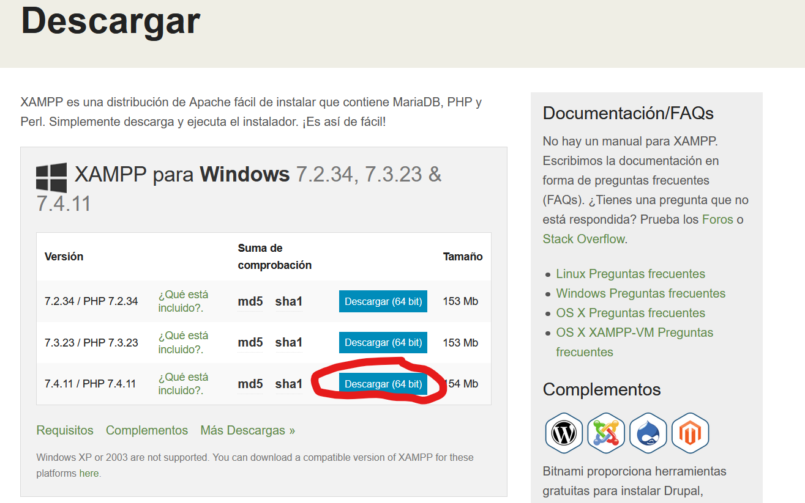
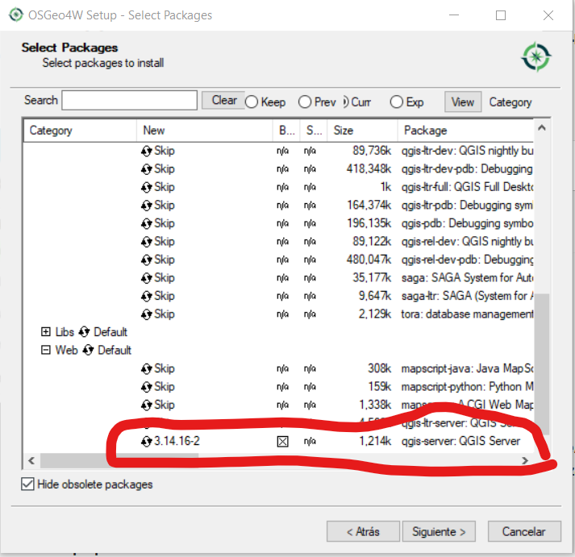
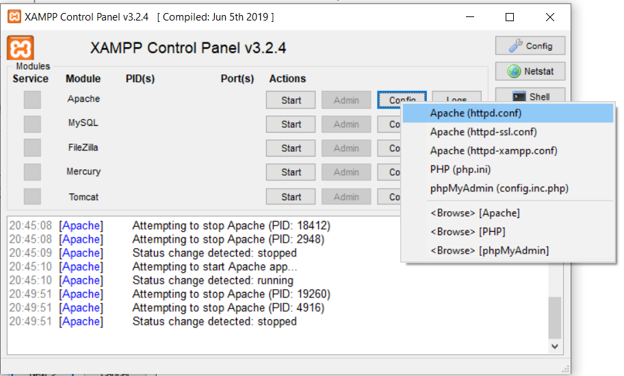
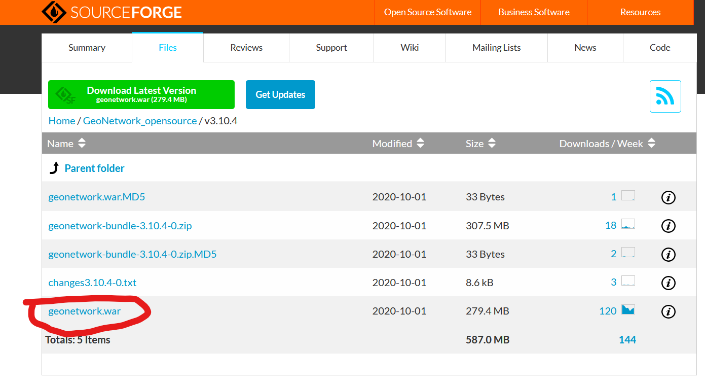

Instalación de programas
XAMP
XAMPP es una distribución de Apache fácil de instalar que contiene MariaDB, PHP y Perl. Simplemente descarga y ejecuta el instalador. ¡Es así de fácil!
Descargar la última version de XAMPP desde https://www.apachefriends.org/download.html
 Descarga XAMPP
Ejecutar el archivo descargado.
En el formulario seleccionar todos los componentes
 Componentes XAMPP
Componentes XAMPP
Warning
Debido a que en los ordenadores de la UAB no se permite instalar software de forma permanente se debe instalar el XAMPP en la unidad de trabajo.
Siguiente -> Siguiente para el resto de opciones del asistente.
QGIS Server
Descargar el instalador OsGeo4W que es una distribución binaria que contiene un gran número programas geoespaciales de código abierto para entornos Windows (desde Windows 10 hasta XP). OSGeo4W incluye QGIS, GDAL/OGR, GRASS, SAGA así como muchos otros paquetes (más de 150).
El primer paso es acceder a la sección de descargas de la página web de QGIS y seleccionar la opción de OSGeo4W Instalador en red (64 bit).
 Descarga OSGeo4W
Descarga OSGeo4W
Para personalizar nuestra instalación seleccionaremos la opción Advanced Install.
 Instalación OSGeo4W
Instalación OSGeo4W
La siguiente ventana nos pide seleccionar una fuente de descarga. Lo normal es descargar e instalar los programas en el momento en el que lanzamos el instalador, por lo que seleccionaremos la opción Install from Internet.
A continuación se nos pide seleccionar el destino de la instalación, instalar los programas para todos los usuarios y opcionalmente crear un icono en el escritorio de nuestro PC.
Warning
Debido a que en los ordenadores de la UAB no se permite instalar software de forma permanente se debe instalar el en la unidad de trabajo.
Siguiente -> Siguiente para el resto de opciones del asistente hasta llegar a la ventana Select Packages. Desde esta ventana podemos seleccionar qué programas queremos descargar e instalar:
Despliega la categoría Web y pincha sobre qgis-server: QGIS Server
 Selección QGIS Server
Siguiente -> Siguiente para el resto de opciones del asistente.
Configurar el Apache
Editar el archivo httpd.conf. En el caso del XAMPP lo hacemos desde el panel de control.
 Apache config file
Se abre el archivo httpd.conf con el editor de texto y debemos cambiar lo siguiente
ScriptAlias
Cambiar la línea:
1 | |
por:
1 | |
QGIS Server configuration
Cambiar la líneas:
1 2 3 4 5 | |
por:
1 2 3 4 5 6 7 8 | |
Cgi handler
Cambiar la línea:
1 | |
por:
1 | |
Variables
Al final del archivo escribir:
1 2 3 4 5 6 | |
Test
Reiniciar el Apache y abrir una petición GetCapabilities a nuestro servidor
Abrir en el navegador http://localhost/cgi-bin/qgis_mapserv.fcgi.exe?SERVICE=WMS&VERSION=1.3.0&REQUEST=GetCapabilities
Deberíamos ver un XML de un WMS Capabilities
Geonetwork
GeoNetwork es una aplicación de catálogo para administrar recursos referenciados espacialmente. Proporciona potentes funciones de búsqueda y edición de metadatos, así como un visor de mapas web interactivo. Actualmente se utiliza en numerosas iniciativas de infraestructura de datos espaciales en todo el mundo.
Para descargar el Geonetwork abrimos la página https://geonetwork-opensource.org/downloads.html y seleccionamos la versión v3.10.4 (Current release). En la página de descarga seleccionamos el geonetwork.war
 Descarga Geonetwork
Lo siguiente que debemos hacer es mover el archivo descargado geonetwork.war dentro de la carpeta del tomcat. Para ello ubicamos la carpeta tomcat/webapps (C:\xampp\tomcat\webapps) dentro de la carpeta de instalación del XAMPP y copiamos el archivo geonetwork.war en esta carpeta
Abrimos el panel de control del XAMPP e iniciamos el Tomcat. Se abre una nueva ventana del terminal donde vemos el proceso de despliegue de la aplicación de Geonetwork dentro del Tomcat.
 Desplegar Geonetwork
Desplegar Geonetwork
Abrir el navegador y escribir http://localhost:8080/geonetwork/ y se debería ver la pantalla de inicio de Geonetwork
 Pantalla inicio Geonetwork
Pantalla inicio Geonetwork